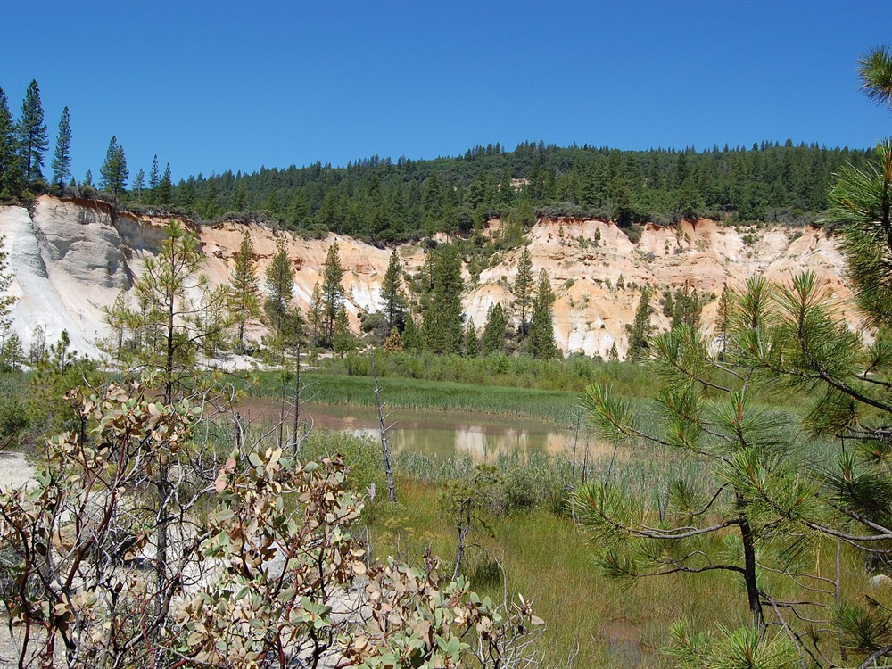
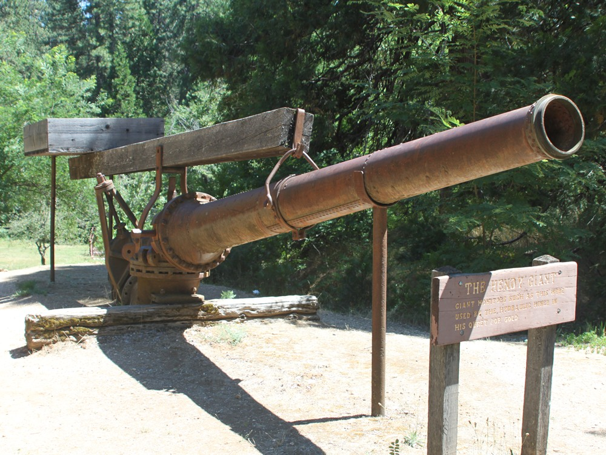
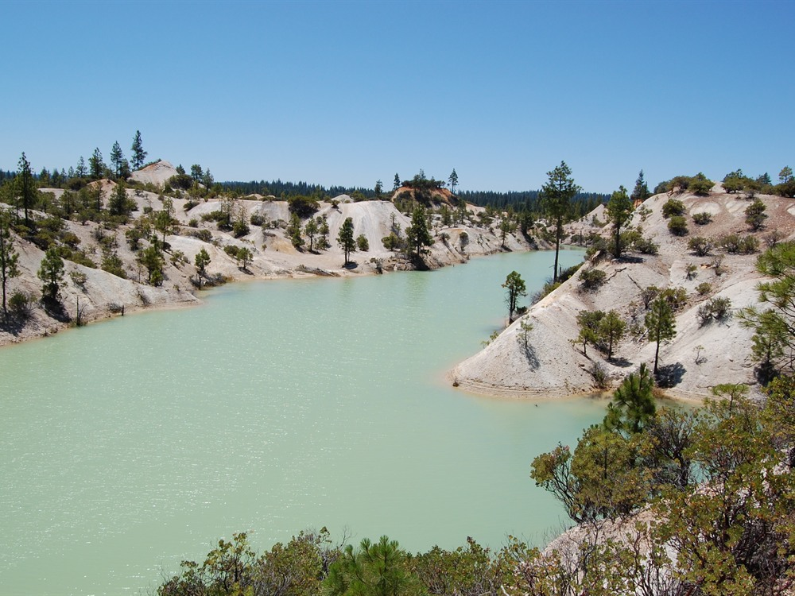
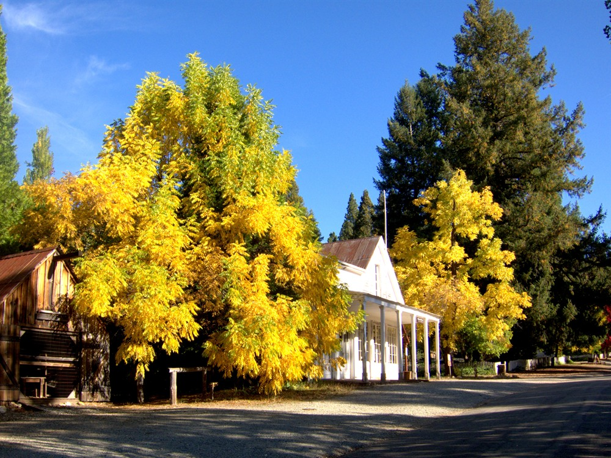

Former hydraulic gold mining district featuring dramatic cliffs, mining ruins, scenic trails, and exhibits interpreting one of the largest environmental transformations of the California Gold Rush.
Visitor Center and Museum: Daily, generally 10am to 4pm
Additional fees may apply for camping
How to Get There
From Nevada City (15 mi): Take CA-49 north, turn onto Tyler Foote Road, continue through the Sierra Nevada foothills, then follow North Bloomfield Road to 23579 North Bloomfield Road at the entrance to Malakoff Diggins State Historic Park.
Overview
Malakoff Diggins State Historic Park preserves the remains of the largest hydraulic gold mine in California and one of the most dramatic landscapes of the Gold Rush. Beginning in the 1850s, miners used powerful water cannons to wash away hillsides in search of gold-bearing gravel, leaving a pit about 7,000 feet long, up to 3,000 feet wide and nearly 600 feet deep in places. The debris washed into rivers and farmland downstream, and an 1884 federal court ruling, the Sawyer decision, banned dumping mining debris into rivers and effectively ended large-scale hydraulic mining. The state park was established in 1965 and covers more than 3,000 acres, and its historic district was listed on the National Register of Historic Places in 1973. Visitors come to see the eroded cliffs of the diggings, tour the restored town of North Bloomfield, and hike, camp and explore the forested backcountry.
Access
The park is in the Sierra Nevada foothills in Nevada County, about 26 miles northeast of Nevada City by road. From Nevada City, drive about 11 miles north on Highway 49 toward Downieville, turn right on Tyler Foote Road and follow the paved road, which changes names several times, to the park at 23579 North Bloomfield Road. State Parks warns against following GPS directions, which may send drivers onto a dirt road, and suggests high-clearance four-wheel drive on unpaved routes. The drive takes about 50 minutes from Nevada City, and vehicle day use is $10.
Seasons
Late spring through fall is the best time to visit, when the roads are dry, the trails are open, and the museum and town tours run on their fullest schedules. Summer is warm and the forest provides shade on trails such as Humbug Creek. Winters bring rain and snow to the foothills, road conditions can be difficult, and State Parks mentions snowshoeing as a winter activity. The visitor center and museum are open daily from Memorial Day to Labor Day, but only on weekends from November through May, and town tours run on Saturdays year-round.
Things to Do
See the Malakoff Diggins Pit
The diggings overlook shows the scale of hydraulic mining, with towering eroded cliffs and a canyon carved by water cannons. Interpretive signs explain how the technique worked and why it was eventually halted.
Tour the Historic Town of North Bloomfield
The park includes restored buildings from the mining town of North Bloomfield, which once had a population of about 1,500. Guided town tours are offered every Saturday year-round, and the museum has exhibits on mining and daily life.
Camp or Stay in a Historic Cabin
Chute Hill Campground and cabins in the historic town offer overnight stays, both by reservation. Fires are allowed in designated fire rings unless posted otherwise.
Hike the Backcountry
More than 20 miles of trails lead through forest and along creeks, ranging from short walks of about half a mile to routes of about 3 miles one way.
Top Trails
Rim Trail
Length: Approximately 3.3 miles
Elevation Gain: Varies
Difficulty: Moderate
This trail follows the edge of the diggings, with views into the pit and across the surrounding forest. It can be combined with other trails for a longer loop.
Humbug Creek Trail
Length: Approximately 2.5 miles
Elevation Gain: Varies
Difficulty: Intermediate to Difficult
One of the park’s shadier trails, it follows Humbug Creek through forest. The route descends toward the creek, so expect a climb on the return.
Visitor Centers
The Visitor Center and Museum in North Bloomfield is the best starting point, with exhibits about hydraulic mining and life in the mining town. State Parks lists it as open daily from 10am to 6pm from Memorial Day to Labor Day, daily from 10am to 4pm from Labor Day through October, and on weekends from 10am to 4pm from November through May. The park grounds are self-guided and open from sunrise to sunset, and firewood is sold at the visitor center.
Camping and Lodging
The park has Chute Hill Campground (reservation only, no showers, trailers up to 19 feet) and cabins in the historic town, both booked through ReserveCalifornia. Hotels, inns and restaurants are in Nevada City and Grass Valley, roughly an hour away by road. Nevada City is the closest town with a full range of services, and the area fills quickly on summer and fall weekends.
This article uses material from the Wikipedia articles and official tourism pages for the https://www.parks.ca.gov/?page_id=514Malakoff Diggins State Historic Park, which are released under the Creative Commons Attribution-Share-Alike License 3.0. Additional information from California State Parks.

_at_Malakoff_Diggins_State_Historic_Park.JPG){kind=link}




